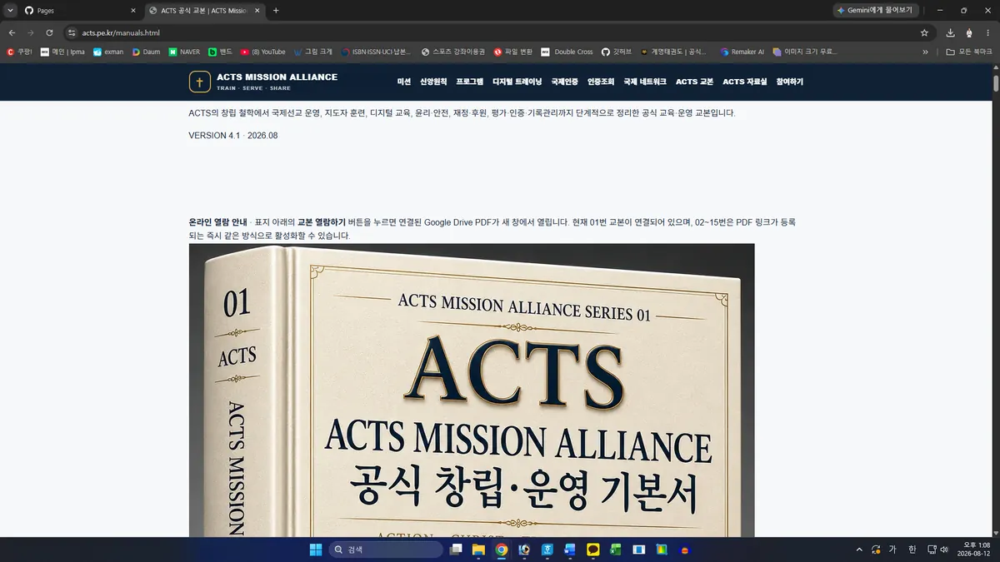

스포츠·태권도·태권검도·무도교육을 통해 현지 사람들과 자연스럽게 만납니다.
ACTS MISSION ALLIANCE · 모두에게 전하는 이야기
왜 무도를 하던 사람이
선교연합을 만들었을까요?
오랫동안 쌓아온 무도교육의 경험과 국제 네트워크가, 멀리 타국에서 사역하는 선교사들에게 실제적인 힘이 될 수 있다고 생각했습니다.

ACTS는 왜 시작되었을까요?
선교 현장에는 복음을 전하는 마음만큼이나 사람을 만나고, 관계를 만들고, 다음 세대를 교육할 수 있는 실제적인 도구가 필요합니다.
“내가 평생 해온 일이 누군가의 선교 현장에서는 새로운 문을 여는 도구가 될 수 있지 않을까?”
그 질문에서 ACTS MISSION ALLIANCE가 시작되었습니다. ACTS는 ACTION · CHRIST · TRAINING · SERVICE의 마음으로 신앙을 말에만 두지 않고 교육과 전문성, 봉사와 행동으로 연결하려 합니다.

왜 태권도와 태권검도가 선교와 연결될까요?
무도는 언어가 달라도 함께 움직이고 배우며 관계를 시작할 수 있습니다. 어린이와 청소년을 만나고, 건강한 규칙과 존중을 가르치며, 지역 공동체와 자연스럽게 연결되는 교육의 언어가 될 수 있습니다.
기술만 전달하는 것이 아니라 예절, 책임, 도전, 공동체의 가치를 함께 나눕니다.
선교사 한 사람이 계속 가르치는 구조가 아니라 현지 사람이 배우고 다시 지도자로 성장하는 길을 준비합니다.
선교사에게 필요한 것을 먼저 준비합니다
ACTS 홈페이지의 선교사 지원센터는 해외 선교사가 교육·자료·디지털·번역·프로그램 지원을 받을 수 있도록 준비하는 공간입니다.
교육자료→온라인 교육→태권검도 프로그램→지도자 훈련→현지 확산
한국에서 모든 것을 직접 운영하려는 것이 아닙니다. 필요한 도구와 교육을 나누고, 현지 교회·선교사·지도자가 스스로 사용할 수 있도록 돕는 것이 목표입니다.
전문인이 자신의 재능으로 선교를 돕는다면
모든 사람이 선교사가 되어 해외로 갈 수는 없습니다. 하지만 교육자, 무도인, 미디어 전문가, 디지털 전문가처럼 각자의 전문성을 가진 사람이 자신의 재능을 나눌 수는 있습니다.

ACTS는 선교사·교회·지도자·전문인을 연결하여 기도하는 사람, 현장을 섬기는 사람, 전문성을 나누는 사람이 함께 움직이는 구조를 만들어 가고자 합니다.
대한민국에서 시작해 세계의 현장으로
ACTS가 준비하는 디지털 선교본부는 세계 선교사·교회·지도자·전문인을 연결하는 온라인 기반입니다. 국가와 거리가 달라도 휴대폰 하나로 교육자료를 받고, 프로그램을 배우고, 필요한 도움을 요청할 수 있는 길을 만들고 있습니다.
한 사람을 돕고 → 그 사람이 현지의 또 다른 사람을 세우고 → 그 성장이 다시 지역 공동체로 이어지는 것.
ACTS가 꿈꾸는 선교의 확장입니다.
ACTS가 꿈꾸는 선교의 확장입니다.
06
제가 ACTS를 만든 이유입니다
안녕하세요. 전성권입니다.
저는 오랜 시간 무도와 교육의 길을 걸어왔습니다. 그동안 쌓아온 경험과 사람의 연결이 저만을 위한 것이 아니라, 더 멀리 있는 누군가를 돕는 데 쓰일 수 있기를 바랐습니다.
특히 낯선 환경에서 묵묵히 사역하는 선교사님들에게 제가 가진 무도교육과 디지털 기술, 국제 네트워크가 작은 도구가 된다면 그것만으로도 충분히 의미 있는 일이라고 생각합니다.
ACTS는 거창한 이름보다, 가진 것을 나누고 실제로 행동하는 사람들이 함께하는 선교연합이 되기를 바랍니다.
ACTS MISSION ALLIANCE
전성권 드림